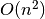
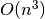

pytransform.transform_manager.TransformManager¶
-
class
pytransform.transform_manager.TransformManager[source]¶ Manage transforms between frames.
This is a simplified version of ROS tf that ignores the temporal aspect. A user can register transforms. The shortest path between all frames will be computed internally which enables us to provide transforms for any connected frames.
Suppose we know the transforms A2B, D2C, and B2C. The transform manager can compute any transform between the frames A, B, C and D. For example, you can request the transform that represents frame D in frame A. The transform manager will automatically concatenate the transform D2C, C2B, and B2A, where C2B and B2A are obtained by inverting B2C and A2B respectively.
Warning
It is possible to introduce inconsistencies in the transform manager. Adding A2B and B2A with inconsistent values will result in an invalid state because inconsistencies will not be checked. It seems to be trivial in this simple case but can be computationally complex for large graphs. You can check the consistency explicitly with
TransformManager.check_consistency().-
add_transform(from_frame, to_frame, A2B)[source]¶ Register a transform.
Parameters: from_frame : string
Name of the frame for which the transform is added in the to_frame coordinate system
to_frame : string
Name of the frame in which the transform is defined
A2B : array-like, shape (4, 4)
Homogeneous matrix that represents the transform from ‘from_frame’ to ‘to_frame’
Returns: self : TransformManager
This object for chaining
-
check_consistency()[source]¶ Check consistency of the known transformations.
The complexity of this is between  and , where
 is the number of nodes. In graphs where each pair of
nodes is directly connected the complexity is . In graphs
that are actually paths, the complexity is .
is the number of nodes. In graphs where each pair of
nodes is directly connected the complexity is . In graphs
that are actually paths, the complexity is .Returns: consistent : bool
Is the graph consistent, i.e. is A2B always the same as the inverse of B2A?
-
get_transform(from_frame, to_frame)[source]¶ Request a transform.
Parameters: from_frame : string
Name of the frame for which the transform is requested in the to_frame coordinate system
to_frame : string
Name of the frame in which the transform is defined
Returns: A2B : array-like, shape (4, 4)
Homogeneous matrix that represents the transform from ‘from_frame’ to ‘to_frame’
-
plot_connections_in(frame, ax=None, ax_s=1, whitelist=None, **kwargs)[source]¶ Plot direct frame connections in a given reference frame.
A line between each pair of frames for which a direct transformation is known will be plotted. Direct means that either A2B or B2A has been added to the transform manager.
Note that frames that cannot be connected to the reference frame are omitted.
Parameters: frame : string
Reference frame
ax : Matplotlib 3d axis, optional (default: None)
If the axis is None, a new 3d axis will be created
ax_s : float, optional (default: 1)
Scaling of the new matplotlib 3d axis
whitelist : list, optional (default: None)
Both frames of a connection must be in the whitelist to plot the connection
kwargs : dict, optional (default: {})
Additional arguments for the plotting functions, e.g. alpha
Returns: ax : Matplotlib 3d axis
New or old axis
-
plot_frames_in(frame, ax=None, s=1.0, ax_s=1, show_name=True, whitelist=None, **kwargs)[source]¶ Plot all frames in a given reference frame.
Note that frames that cannot be connected to the reference frame are omitted.
Parameters: frame : string
Reference frame
ax : Matplotlib 3d axis, optional (default: None)
If the axis is None, a new 3d axis will be created
s : float, optional (default: 1)
Scaling of the frame that will be drawn
ax_s : float, optional (default: 1)
Scaling of the new matplotlib 3d axis
show_name : bool, optional (default: True)
Print node names
whitelist : list, optional (default: None)
Frames that must be plotted
kwargs : dict, optional (default: {})
Additional arguments for the plotting functions, e.g. alpha
Returns: ax : Matplotlib 3d axis
New or old axis
-